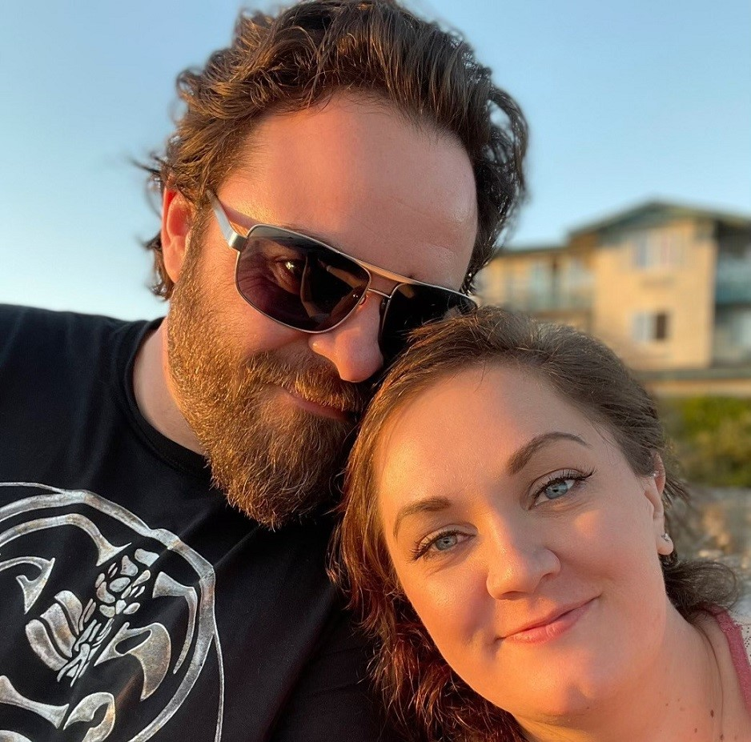

The first phase of my career was in healthcare as a Respiratory Therapist.
After earning a degree in Respiratory Care in 2009, I went to work at a
rural hospital in northern California and was responsible for putting
patients on various types of life-sustaining machines, evaluating the
breathing of every high-risk newborn as they're delivered and intervening
when necessary, administering breathing treatments to patients with asthma
or COPD, and countless other therapies. The joy of bringing comfort to people
that were going through some of the most difficult moments of their lives was
incredibly fulfilling, but being around so much death eventually takes it's
toll and leads to emotional fatigue, or burnout. And so it was that after
over a decade as a Respiratory Therapist, I decided to retire my stethoscope
and begin a new career as a Software Engineer.
CAREER PHASE TWO:
Computer Programming
A Software Engineer hard at work.
I started my computer programming career by enrolling in three classes at my local
college: Introduction to Programming, Programming and Algorithms I, and Web Development.
These three classes allowed me to understand the fundamentals of Python, Go, HTML, and CSS.
Before the end of the semester I had switched to Codecademy's Pro courses and begun going
the self-taught route. I quickly earned certificates in HTML, CSS, Introduction to JavaScript,
Intermediate JavaScript, Command Line Interface, and Git/GitHub. I then enrolled in their
Front End Developer course and eventually completed 60% of the class before my progress stalled
for good. At that point I knew that I needed help. Some sort of curriculum to follow which was
curated by a seasoned programmer and includes everything I'll need to be job-ready. Not to
mention the desperate need of accountability, motivation, and a peer-group to learn alongside.
Hence, the journey of my entire life leading to this path...the path to Coding Temple.
It is here that I will complete my training and finally reach my final form as a professional
Software Engineer / Web Developer / Computer Programmer / Coder / why do we have so many names?
ABOUT ME:

I couldn't do this without her.
Born and raised in northern California, I am a father to 3 awesome kids aged 0-to-16 and a husband to a
beautiful, intelligent, and successful wife. My hobbies include programming, disc-golfing, hiking, traveling,
weight-lifting, and video games to name a few. My interests include nature, UFC, podcasts, and many
other fun things in the world.